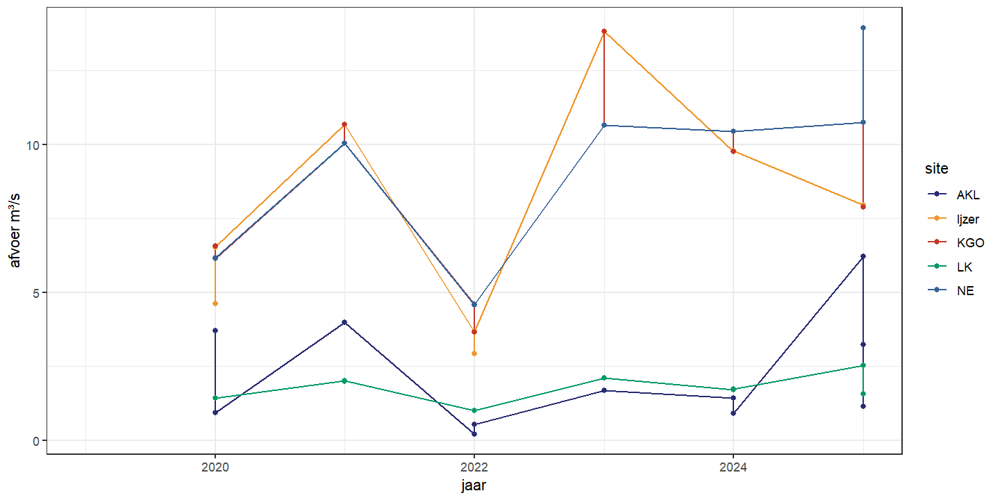

A Appendix
A.1 Instructies tijdelijk stopzetten aangepast spuibeheer
| Site | Stopzetten bij … | INBO ctd | VMM ctd |
|---|---|---|---|
| AKL | Ramskapelle > 0.87 mS/cm | akl ramskapelle | |
| LK | Ramskapelle > 2.80 mS/cm | lk ramskapelle | |
| KGO | Plassendale > 2.46 mS/cm | plassendale | IMM0005 Oudenburg Plassendale KanaalGentOostende |
| Ijzer | Tervate > 2.66 mS/cm | tervate | Ijzer EC DWG Tervatebrug (BWO_DWG_CTD_Ijzer_IOW17) |
| Woumen > 1.25 mS/cm | Koevaardeken EC DWG inname Blankaart (BWO_DWG_CTD_Koevaardeken_IOW24): maar precies geen data dus misschien ook dit alternatief: Diksmuide/IJzer/MPS/WPC Blankaart (BWO_DWG_Exo_Ijzer_IOW3) |
A.2 Tijdsreeksen
Figuur A.1: Gemiddelde specifieke geleidbaarheid (mS/cm) in functie van de tijd voor de verschillende sites en over verschillende afstanden tot de spuischuiven.
Figuur A.2: Gemiddelde uurlijkse neerslag (mm) in functie van de tijd voor de verschillende sites.

Figuur A.3: Gemiddelde afvoer (m³/s) in functie van de tijd voor de verschillende sites.
A.3 Eerdere jaren
A.3.1 Tabellen
| site.debiet | jaar | min | max | mean |
|---|---|---|---|---|
| Afleidingskl Leie | 2020 | -2.31 | 58.13 | 3.70 |
| Afleidingskl Leie | 2021 | -3.03 | 54.64 | 3.98 |
| Afleidingskl Leie | 2022 | -2.01 | 34.43 | 0.20 |
| Afleidingskl Leie | 2023 | -1.92 | 39.44 | 1.68 |
| Afleidingskl Leie | 2024 | -2.01 | 37.71 | 1.42 |
| Afleidingskl Leie | 2025 | -1.16 | 34.74 | 2.08 |
| Ijzer | 2020 | -7.15 | 60.81 | 6.57 |
| Ijzer | 2021 | -9.79 | 65.75 | 10.69 |
| Ijzer | 2022 | -8.20 | 48.60 | 3.66 |
| Ijzer | 2023 | -10.14 | 89.98 | 13.82 |
| Ijzer | 2024 | -8.08 | 60.72 | 9.78 |
| Ijzer | 2025 | -10.79 | 50.03 | 5.54 |
| Kl Gent-Oostende | 2020 | -8.92 | 56.59 | 6.13 |
| Kl Gent-Oostende | 2021 | -7.91 | 42.63 | 10.03 |
| Kl Gent-Oostende | 2022 | -9.43 | 38.75 | 4.57 |
| Kl Gent-Oostende | 2023 | -10.02 | 51.97 | 10.57 |
| Kl Gent-Oostende | 2024 | -7.47 | 44.25 | 10.44 |
| Kl Gent-Oostende | 2025 | -9.42 | 38.57 | 8.56 |
| Kl Nieuwpoort-Duinkerke | 2020 | -9.63 | 8.76 | -0.03 |
| Kl Nieuwpoort-Duinkerke | 2021 | -24.54 | 9.29 | 0.02 |
| Kl Nieuwpoort-Duinkerke | 2022 | -37.76 | 39.09 | -0.09 |
| Kl Nieuwpoort-Duinkerke | 2023 | -12.57 | 16.06 | 0.06 |
| Kl Nieuwpoort-Duinkerke | 2024 | -22.51 | 31.21 | 0.23 |
| Kl Nieuwpoort-Duinkerke | 2025 | -39.99 | 40.98 | -0.03 |
| Leopoldkl | 2020 | -6.71 | 26.51 | 1.42 |
| Leopoldkl | 2021 | -5.88 | 31.46 | 2.00 |
| Leopoldkl | 2022 | -5.83 | 26.06 | 1.01 |
| Leopoldkl | 2023 | -36.22 | 31.26 | 2.11 |
| Leopoldkl | 2024 | -4.08 | 32.93 | 1.69 |
| Leopoldkl | 2025 | -4.66 | 22.98 | 0.82 |
| AKL | Ijzer | KGO | LK | VA | |
|---|---|---|---|---|---|
| start AS | 05-03-2022 | 01-03-2022 | 28-02-2022 | 02-03-2022 | 01-03-2022 |
| stop AS | 19-03-2022 | 03-05-2022 | 15-05-2022 | 27-04-2022 | 15-05-2022 |
| periode (dagen) | 14 days | 63 days | 76 days | 56 days | 75 days |
| # dagen effectief AS | 3 | 41 | 53 | 23 | 76 |
| # events AS tijdens periode | 3 | 71 | 93 | 23 | 147 |
| # events AS per dag | 1.00 | 1.73 | 1.75 | 1.00 | 1.93 |
| mediaan duur event AS (min) | 430 | 245 | 165 | 410 | 177 |
| mediaan duur AS per dag (min) | 430 | 424 | 289 | 410 | 342 |
| totale duur AS periode (min) | 1130 | 16623 | 14850 | 8155 | 26749 |
| verwachte # glasaal per AS event | 1350 | 2221 | 964 | 1350 | NA |
| verwachte # glasaal periode | 4051 | 157691 | 89671 | 31056 | 40730* |
| AKL | Ijzer | KGO | LK | NE | VA | |
|---|---|---|---|---|---|---|
| start AS | 18-03-2023 | 09-03-2023 | 06-03-2023 | 01-03-2023 | 07-03-2023 | 02-03-2023 |
| stop AS | 03-05-2023 | 15-05-2023 | 05-05-2023 | 08-05-2023 | 15-05-2023 | 15-05-2023 |
| periode (dagen) | 46 days | 67 days | 60 days | 68 days | 69 days | 74 days |
| # dagen effectief AS | 6 | 60 | 32 | 22 | 64 | 74 |
| # events AS tijdens periode | 6 | 113 | 50 | 22 | 225 | 142 |
| # events AS per dag | 1.00 | 1.88 | 1.56 | 1.00 | 3.52 | 1.92 |
| mediaan duur event AS (min) | 368 | 275 | 160 | 375 | 45 | 185 |
| mediaan duur AS per dag (min) | 368 | 517 | 250 | 375 | 158 | 355 |
| totale duur AS periode (min) | 2285 | 32323 | 7685 | 7930 | 16190 | 26580 |
| verwachte # glasaal per AS event | 1350 | 2221 | 964 | 1350 | 612 | NA |
| verwachte # glasaal periode | 8102 | 250973 | 48210 | 29706 | 137711 | 75690* |
| AKL | Ijzer | KGO | LK | NE | VA | |
|---|---|---|---|---|---|---|
| start AS | 02-03-2024 | 09-03-2024 | 02-03-2024 | 02-03-2024 | 02-03-2024 | 09-03-2024 |
| stop AS | 18-04-2024 | 13-05-2024 | 30-04-2024 | 08-05-2024 | 13-05-2024 | 13-05-2024 |
| periode (dagen) | 47 | 65 | 59 | 67 | 72 | 65 |
| # dagen effectief AS | 10 | 66 | 46 | 17 | 64 | 66 |
| # events AS tijdens periode | 10 | 122 | 83 | 17 | 190 | 123 |
| # events AS per dag | 1.00 | 1.85 | 1.80 | 1.00 | 2.97 | 1.86 |
| mediaan duur event AS (min) | 322 | 285 | 195 | 435 | 45 | 186 |
| mediaan duur AS per dag (min) | 322 | 527 | 351 | 435 | 134 | 346 |
| totale duur AS periode (min) | 3180 | 35329 | 14797 | 6135 | 15607 | 22722 |
| verwachte # glasaal per AS event | 1350 | 2221 | 964 | 1350 | 612 | NA |
| verwachte # glasaal periode | 13502 | 270962 | 80029 | 22954 | 116289 | 176649* |

 Bruneel, S., et. al. (). !!! missing DOI !!!
Bruneel, S., et. al. (). !!! missing DOI !!!